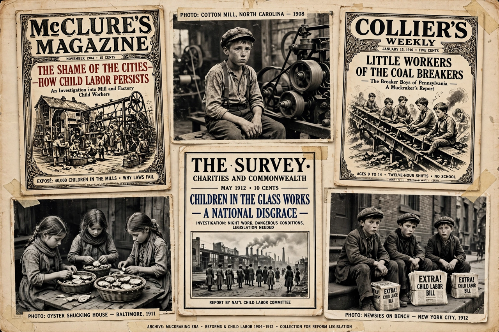

The Progressive Era (1896–1917) was a period of widespread social activism and political reform across the United States. Progressives sought to address problems caused by industrialisation, urbanisation, immigration, and political corruption through government action, expertise, and democratisation.
Progressive reforms included trust-busting and regulation of railroads and food and drugs (the Pure Food and Drug Act and Meat Inspection Act of 1906), conservation of natural resources, labour protections and restrictions on child labour, women's suffrage (achieved nationally by the Nineteenth Amendment in 1920), Prohibition (Eighteenth Amendment, 1919), the direct election of senators (Seventeenth Amendment), the federal income tax (Sixteenth Amendment), and the creation of the Federal Reserve (1913). At state and local level, reformers introduced initiatives, referendums, recalls, direct primaries, and commission and city-manager forms of government.
Leading figures included presidents Theodore Roosevelt, William Howard Taft, and Woodrow Wilson; muckraking journalists such as Upton Sinclair, Ida Tarbell, and Lincoln Steffens; settlement-house pioneer Jane Addams; and Wisconsin governor Robert M. La Follette. Roosevelt's break with the Republicans in 1912 produced the Progressive ("Bull Moose") Party.
Historians note the era's contradictions: many white Progressives accommodated or promoted Jim Crow segregation, eugenics enjoyed support among some reformers, and Prohibition is widely judged a failure. The era is nonetheless regarded as foundational to the modern American regulatory and welfare state.
See also: Muckraker · New Nationalism · New Freedom